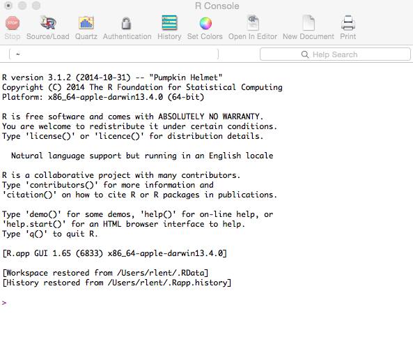

Reading time: 23 minute(s) @ 200 WPM.
Prologue
R is a free, open-source, cross-platform statistical and graphical environment that can be obtained from www.r-project.org.
Some reasons for using R:
R is world-class software for data analysis and visualization.
R is free. There are no license fees and no restrictions on how many times and where you can install the software.
R runs on a variety of computer platforms including Windows, MacOS, and Unix.
R provides an unparalleled platform for programming new statistical methods in an easy and straightforward manner.
R contains advanced statistical routines not yet available in other packages.
R has state-of-the-art graphics capabilities.
More reasons for using R can be found here. And here. See also Why you should learn R first for data science, The rise of R as the language of analytics, and Programming tools: Adventures with R.
One may also benefit from reading Why R has A Steep Learning Curve. (And then, stop your whining.)
And after you have stopped whining, you could read Why R is Bad for You and formulate your own opinion.
Assuming you are still interested in R, we note that R is way easier to use when run inside of RStudio, a free, cross-platform integrated development environment (IDE). Every example in this post can either be run in standalone R or in the R console panel inside of RStudio. (See also RStudio as a Research and Writing Platform). You can install a menu-driven, graphical user interface (R Commander) that makes R easier to use, but the true power of R lies in its programmability.
There are many excellent sources of R documentation. These include An Introduction to R, the gigantic R Reference Index (PDF), and my personal favorite, Quick-R. There is also an R Journal, an R FAQ (Frequently Asked Questions), many books, the R Reference Card (PDF), various R cheat sheets (Google it), and other assorted R websites.
To install R, go to the R website. Under “Getting Started:”, click download R. Choose a CRAN (Comprehensive R Archive Network) mirror site that is closest to you. Then, under “Download and Install R,” download the installer (“Precompiled binary distribution”) for your particular computer platform. Run the downloaded installer application and you should be off and running. Extensive additional gory details can be found at R Installation and Administration.
R is not like other statistical software. Rather than being a “software package” in the usual sense of SPSS, SAS, Systat, etc., where the user fills in the blanks in a series of menus and dialog boxes and then has to sift through reams of canned output, R is actually a programming language and computing environment customized for data analysis and graphics.
Getting a feel for R
The impact of this introduction to R will be greater if you follow along in R, entering the commands as shown. You can copy and paste R commands from this introduction directly into the R console instead of typing them by hand.
Readers may find the Glossary of Statistical Terms helpful.
The console
When you start R you will see a command console window, into which you type R commands. It looks like this on the Mac:

The command prompt is the > symbol.
You type R statements into the console, which is a command-line interface. R then evaluates the statements, and if it finds no errors, does something, like printing a result, producing graphics, or storing a value for later use. It then waits for you to type in another command. This is how computing was done in the olden days, and it is still the most efficient and powerful way to do computing.
R commands can also be stored in a script, which is simply a text file containing basically the same commands that you would enter interactively on the command line. This is one of the most powerful features of R (R is, after all, a programming language) and enables complex sequences of commands to be stored, edited, and rerun.
R can evaluate expressions and manipulate variables, e.g.,
> x <- 2This assigns the value of 2 to the variable x. In R-speak, this assignment operation is pronounced “x gets 2,” not “x equals 2.” Many other programming languages use an equals sign (=) for assigning values to variables (e.g., x = 2), but R is different. In R you type a less-than symbol immediately followed by a dash, making a left-pointing arrow that points towards the variable to which you want to assign a value. R will let you use an equals sign, but R purists insist that using <- is preferable. This is true both for historical reasons (explained in the previous link) and for consistency, because there is another R assignment operator that uses a double arrow, namely the <<- operator.
To print the contents of a variable, simply type the variable’s name:
> x
[1] 2The 1 in square brackets is part of R’s way of printing lists of numbers. This convention becomes more useful when there is a longer list of numbers to print. The number in brackets is the index of the first number on that line. So if we were to generate 15 random numbers from a normal distribution, our output display might look like:
> rnorm(15)
[1] -1.20251243 -0.93915306 -0.58314349 -0.28205304 -0.72031211 1.12303378
[7] 1.60557581 1.30062736 1.06739881 -2.09506242 -0.04172139 -1.66868780
[13] 0.87027623 0.43993863 -0.07720584Here the [7] indicates that 1.60557581 is the seventh element in the list of numbers (called a vector in R parlance).
The View function [NOTE: Capital V!!] provides a prettier way to view a variable, e.g.,
> x <- rnorm(100)
> View(x, 'This is x')This will place the contents of x in a data viewer window, which can be scrolled using the keyboard page-up, page-down, and arrow keys.
Or, alternatively, we can convert (“coerce”) x, which initially is a vector, into a data frame:
View(as.data.frame(x), 'This is x') # More spreadsheet-like, especially in RStudio.
Also, please note that, in R, the pound symbol (#) denotes a comment. Any line that starts with # is treated as a comment and is ignored by the R interpreter.
Function calls and arguments
Much of R involves function calls, arguments, and return values. Like in your high school algebra class, when you wrote f(x) (“the f of x”), the f stands for the name of the function and the x stands for the arguments passed into the function. In algebra and in computer programming, a function is an equation or a piece of computer code that takes in one or more values (arguments), does some sort of computation with them, and then returns a result.
For example, in R we can generate a vector of 1000 random values from a normal distribution having a mean = 0 and standard deviation = 1 (the default arguments) by typing:
> y = rnorm(1000)
Here, rnorm is the name of the function and 1000 is the argument that we pass into the function. The argument tells the function that we want it to generate 1000 values. The rnorm function generates the values and returns them for storage in the variable that we have named y. If you type the name of the variable y at the R console you will get a display of those 1000 values. Here are the first and last few lines of that output:
[1] 1.3395720217 -0.0115032420 -0.6823326244 0.2613036332 0.1040746632 0.0454721524 0.3640455956 0.7205450723 0.4994317717
[10] 1.0467334635 0.0941044374 0.0470323976 1.6612519966 -1.2653165072 0.2894176277 0.2140272012 -0.1166290364 1.9260137594
[19] -0.1623506191 0.2429738277 -0.0908777982 -1.0126380527 -1.4146009241 0.6927008684 1.5923438893 0.7920350474 -0.3419451639
...
[982] 0.2657230634 0.4844520987 1.9939724168 -0.3426382437 -2.6953913082 -0.7822534469 1.0135964703 0.7795363595 0.1870213245
[991] -1.4046173709 -0.3727388529 -0.2606101406 -0.9251060911 0.1755509390 -2.5640188283 0.5750884848 0.5416196143 -0.5890929375
[1000] -1.4114665861Instead of using the default, unspecified argument values of mean = 0 and standard deviation = 1, we can invoke rnorm like this, specifying a particular mean and sd:
> y = rnorm(1000, mean=42, sd=2.5)
If you type help(rnorm) you will get a help screen that explains the various arguments that can be used with rnorm and its relatives.
To see if we got what we wanted, we can produce a few summary statistics of the variable y:
> summary(y)
Min. 1st Qu. Median Mean 3rd Qu. Max.
34.09 40.29 41.91 41.91 43.63 50.73We see that the mean is 41.91, which is “close enough” to 42, given that rnorm generates a different batch of random values each time it is invoked.
HINT: Getting help
You can get help on any R command by typing help(command).
e.g.,
help(plot)
?command works the same, e.g. ?plot
You can also search for all help topics that contain a particular command by typing two question marks immediately followed by the command, e.g.:
??plot
Some graphics
To visualize the batch of numbers stored in the variable y, we can produce a histogram:
> hist(y)
{kind=link}
(Click image to enlarge.)
This graphic shows us the shape of the distribution of the variable y. The peak of the histogram is centered on the mean value of 42 and tapers off symmetrically on both sides of the mean. This is because the data we generated using rnorm is from a normal distribution, which by definition is in the shape of the famous bell curve.
The plot we just produced, with only one line of R code, can be easily saved to a graphics file in various formats for importing into other applications such as word processors and presentations. For example, to export the plot to a PDF file, select the graphics window and then invoke the R File|Save As… menu option to save the file.
Plots can be saved to other graphics formats as well, but you need to do it from the R console. To save as a JPEG graphics file:
> jpeg('rplot.jpg')
> hist(y)
> dev.off()Note that the plot will be saved in the current working directory (see HINT: Command history and workspace, below) unless otherwise specified. You also may get a “null device” message after the dev.off() statement; this just means that the JPEG file (the “graphics device”) has been closed.
You can use similar commands to export R graphics to other popular graphics formats, such as bmp, tiff, and png.
As is the case with many R things, graphics management is easier in RStudio, which has a dedicated Plots panel for keeping track of graphics and exporting them in various formats, without the need for typing code into the console.
To summarize thus far, R works differently than other statistical software you may have used:
“Rather than setting up a complete analysis at once, the process is highly interactive. You run a command (say fit a model), take the results and process it through another command (say a set of diagnostic plots), take those results and process it through another command (say cross-validation), etc. The cycle may include transforming the data, and looping back through the whole process again. You stop when you feel that you have fully analyzed the data.”
HINT: Command history and workspace
R maintains a history of all of your commands, which you can access using the up- and down-arrow keys. Use the left- and right-arrow keys to move through and edit a retrieved command, after which you can re-submit the edited command by hitting the Enter key.
Some handy workspace commands:
Print the current working directory:
getwd()Change to
mydirectory:setwd(mydirectory)List the objects in the current workspace:
ls()Remove one or more objects from the workspace:
rm(), e.g.,rm(y)
For more help on managing your R workspace, go here.
Getting data into R
Data frames
R uses an internal structure called a data frame (one of several common R data types) to store data in a row-column, spreadsheet-like format, where the rows are the objects of interest (your units of analysis) and the columns are variables measured on each object. In R, a data frame can be created by reading in raw data from an external file. A data frame can be saved by exporting it to an external file or to R’s internal data format.
To illustrate this process we will use a subset (males only) of a famous dataset from biology, the Bumpus House Sparrow data:
- Bumpus sparrow data: bumpus.dat.txt
- Bumpus sparrow metadata: bumpus.met.txt
Here is a description of the dataset, from Hermon Bumpus and House Sparrows:
… on February 1 of the present year (1898), when, after an uncommonly severe storm of snow, rain, and sleet, a number of English sparrows [= House Sparrows, Passer domesticus] were brought to the Anatomical Laboratory of Brown University [, Providence, Rhode Island]. Seventy-two of these birds revived; sixty-four perished; … " (p. 209). “… the storm was of long duration, and the birds were picked up, not in one locality, but in several localities; …” (p. 212). This event . . . described by Hermon Bumpus (1898) . . . has served as a classic example of natural selection in action. Bumpus’ paper is of special interest since he included the measurements of these 136 birds in his paper.
For more information on Hermon Bumpus and House Sparrows, see Hermon Bumpus and Natural Selection in the House Sparrow Passer domesticus (PDF).
Creating data frames
To create an R data frame of the sparrow data:
Download the plain text data file bumpus.dat.txt to a readily-accessible location on your computer.
Issue the following command in R:
> bumpus = read.table("d:/empty/bumpus.dat.txt", sep = "", header = TRUE)
replacing the d:/empty/bumpus.txt with the path to the data file on your particular computer.
In the above read.table command, sep = "" means that there is nothing separating the data items from each other (they are only separated by white space), and header = TRUE means that the first line in the data file is a header containing the names of the variables.
Once your data are in a data frame, you can then begin to manipulate, analyze, and visualize the data. Typing names(bumpus) lists the names of the variables. Typing the name of the data frame (bumpus) will scroll all of the data to the console window. To display individual variables, use syntax like bumpus$survive. Better still, enter attach(bumpus). Once a data frame is “attached” to the console window you can just type the name of a variable by itself to display the variable’s contents. Typing fix(bumpus) will place the data frame into an editing window.
HINT: Data management in R and RStudio.
Actually, you don’t need to download the data file to your computer. You can read it into an R data frame directly if you know the URL that points to the file location on a server:
> bumpus = read.table("https://richardlent.github.io/datasets/bumpus.dat.txt", sep = "", header = TRUE)
This will create the bumpus data frame exactly as if you had first downloaded the source data to your computer.
Importing data from a local file or URL is even easier in RStudio. From RStudio’s File menu, or from the Environment tab, choose Import Dataset|From CSV..., and then enter the URL. If instead you choose to import data from a local file, you will be given a dialog box from which you can choose the file from your computer’s filesystem. RStudio can usually figure out the structure of your data as long as you follow standard practice, such as organizing your data into a comma-separated values (CSV) file. However, RStudio also presents you with various Import Options that you can tweak until the Data Preview indicates that all is well. You then hit the Import button and a data frame will be created.
A CSV file might look like this, in a plain-text file we could call cars.csv:
Year,Make,Model,Length
1997,Ford,E350,2.34
2000,Mercury,Cougar,2.38In the CSV format, the first line of the data file contains field names, and subsequent lines contain the actual data, with all values separated by commas.
Once imported, you can open the data frame in a Data Viewer window from the RStudio Environment pane. (See Using the Data Viewer.) You can’t edit data directly in the Data Viewer; it’s just a viewer. To edit an R data frame, type, for example, fix(bumpus) into the console window. This places the data frame into an editor pane in which you can change values. When you quit the editor, the changes will be saved into the data frame. You can then save the modified data frame using the save command, e.g.,
save(bumpus, file="bumpus.rdata")
This creates a data file in R’s own binary format, which can later be re-loaded into your workspace with the load command:
load("bumpus.rdata")
In RStudio you can also load an R data file by choosing it from the Files pane.
An R data frame can be exported to a plain-text CSV file using the write.table() function:
write.table(bumpus, "bumpus.csv", sep=",")
Here the three parameters passed to write.table() are (1) the name of the R data frame to export, (2) the name of the exported file, and (3) the data separator.
If we had an SPSS file, we could read the data into an R data frame like this:
> cars = read.spss("d:/empty/cars.sav", to.data.frame = TRUE)
As with CSV files, you can import SPSS, SAS, and Stata files from the Import Dataset menus in RStudio.
Go here to see how to import other popular data formats.
The following sequence of commands creates a new data frame from scratch:
age = c(25, 30, 56)
gender = c("male", "female", "male")
weight = c(160, 110, 220)
mydata = data.frame(age, gender, weight)The c() function combines values into a vector, and the data.frame() function packages the vectors as columns into a data frame.
Exploratory data analysis
The principles of exploratory data analysis (EDA) were pioneered by one of my favorite statisticians, John Tukey. An important tenet of EDA is that, before you statistically analyze your data, you should actually look at it.
Tukey stressed the contrasting approaches of exploratory versus confirmatory data analysis. Classical parametric statistical techniques like analysis of variance and linear regression are confirmatory techniques requiring that the data adhere to some fairly rigid assumptions, such as normality and linearity. Modern software makes it easy to crank out sophisticated statistical analyses with a couple of mouse clicks, but it also makes it easy to ignore the underlying assumptions. Performing some exploratory analysis of your data will allow you to assess those assumptions, and will also allow you to detect things like outliers and errors in data entry. (See Tukey’s classic 1980 American Statistician paper We Need Both Exploratory and Confirmatory).
What follows is an EDA session in R using the Bumpus dataset.
Scatterplot matrix
A handy graphical tool for EDA is the scatterplot matrix. This is simple to produce in R: Just give the plot function the name of a data frame:
> plot(bumpus)
{kind=link}
(Click image to enlarge.)
A scatterplot matrix shows individual scatterplots of all pairwise combinations of variables in the data frame and is an excellent way to search for odd patterns in your data, such as groupings of data points, nonlinearities, etc.
HINT: R packages
R organizes all of its routines into packages. For example, the plot routine is part of R’s graphics package. The packages that are installed by default can be listed as follows:
> getOption("defaultPackages")
[1] "datasets" "utils" "grDevices" "graphics" "stats" "methods"And as you may have noticed by now, R commands are case-sensitive.
The datasets package contains example datasets. The utils package contains functions used for programming and developing other packages. The grDevices package provides support for graphics hardware and software. The graphics package contains graphics functions for the base R distribution. (Additional, more sophisticated graphics functions are in the lattice and ggplot2 packages.) Common statistical routines are found in R’s stats package. The methods package supports R functions.
Users of R will probably interact most with the graphics and stats packages. There are many other R packages that provide a way to expand the functionality of the base software. Contributed packages are written by members of the R user community. CRAN Task Views present collections of packages organized by topic and provide tools to automatically install all packages for particular areas of interest. Another way to find R packages is to do a Google search, e.g. How do I do principal coordinates analysis in R?
If you want to use an R function that is not part of the base packages, you must first install that function’s package before you can use it. A Package Installer is included as part of the R GUI and can be used to download and install contributed packages. In RStudio, the Packages pane and Tools menu (Install Packages) can be used to facilitate installation and management of packages.
Summary statistics and data screening
To produce summary statistics for all variables in data frame bumpus, type:
> summary(bumpus)
survive length alar weight lbh lhum lfem ltibio wskull lkeel
Min. :0.0000 Min. :153.0 Min. :39.00 Min. :3.000 Min. :30.00 Min. :0.6590 Min. :0.6580 Min. :1.000 Min. :0.5700 Min. :0.7880
1st Qu.:0.0000 1st Qu.:158.8 1st Qu.:44.75 1st Qu.:4.875 1st Qu.:30.30 1st Qu.:0.7080 1st Qu.:0.7000 1st Qu.:1.103 1st Qu.:0.5940 1st Qu.:0.8300
Median :1.0000 Median :160.0 Median :47.00 Median :5.750 Median :31.00 Median :0.7360 Median :0.7090 Median :1.117 Median :0.6000 Median :0.8500
Mean :0.5893 Mean :160.0 Mean :46.98 Mean :5.764 Mean :30.96 Mean :0.7291 Mean :0.7105 Mean :1.123 Mean :0.6012 Mean :0.8506
3rd Qu.:1.0000 3rd Qu.:161.0 3rd Qu.:50.00 3rd Qu.:6.500 3rd Qu.:31.50 3rd Qu.:0.7460 3rd Qu.:0.7180 3rd Qu.:1.150 3rd Qu.:0.6082 3rd Qu.:0.8795
Max. :1.0000 Max. :166.0 Max. :53.00 Max. :8.300 Max. :31.90 Max. :0.7800 Max. :0.7650 Max. :1.197 Max. :0.6330 Max. :0.9160Previously we used the summary function for a single variable. Here we give summary the name of our data frame and get summary statistics for all of the variables. survive is a binary variable, taking on only two values: 1 for survived, 0 for dead. With a binary variable the mean is not very useful: A bird can’t be 0.58 dead. However, the other variables are morphological measures that vary continuously along their scale of measurement (see bumpus.met.txt), and therefore the summary statistics can be very informative. Look at the minimum and maximum values carefully for errors, such as a misplaced decimal point. Would a House Sparrow really weigh 3000 grams (6.61 pounds)? Many researchers skip this elementary data-screening step, which is especially important if humans are typing in the data from mud-splattered field notebooks. Also, laboratory instruments can go out of calibration, batteries can become weak, power surges can fry delicate circuitry, etc., etc. Check your data!
The mean and median both measure central tendency, but in very different ways. Most people are familiar with the mean, or arithmetic average, calculated by summing the values and dividing the sum by the number of observations. The median, however, is the middle value of ranked data. In other words, if you sorted the values from low to high, the median would be the one in the middle. The mean is very sensitive to outliers (extreme values), whereas the median is not. The following R experiment will illustrate this.
> x = c(1, 2, 3, 4, 5)
> summary(x) Min. 1st Qu. Median Mean 3rd Qu. Max.
1 2 3 3 4 5 Note that the median and mean are equal. But if we add an extreme value (outlier):
> x = c(1, 2, 3, 4, 3000)
> summary(x) Min. 1st Qu. Median Mean 3rd Qu. Max.
1 2 3 602 4 3000 The median is unchanged by the huge outlier (the median is still the middle value, 3) but the mean has increased enormously. When the data are normally distributed the mean and median are equal (see Measures of Central Tendency). So another exploratory diagnostic is to compare the mean and the median. If they are very different, you may have some outliers that are skewing the distribution.
Box plots
The summary statistics 1st Qu. and 3rd Qu. are the first and third quartiles. Along with the median, the quartiles divide the dataset into four equal groups, each group comprising a quarter of the observations.
This five-number summary (minimum, maximum, median, first quartile, third quartile) is better visualised using another invention of John Tukey: the box plot:
> boxplot(length)
{kind=link}
(Click image to enlarge.)
The line running through the central rectangle is the median. The distances from the median to the top and bottom of the rectangle span the third and first quartiles respectively. The central rectangle itself spans the distance from the first to third quartiles (the interquartile range, or IQR). Above and below the rectangle are dotted lines (called “whiskers”) that usually terminate in the minimum and maximum values. However, if outliers are present (as in this example) the whiskers terminate at 1.5 times the IQR and the outlying values are shown as dots.
A box plot is a nice way to visually assess the distribution of your data. For example, if the distribution deviates from a smooth bell-shaped curve, a box plot will make this obvious. Let’s make a skewed set of numbers using the log-normal distribution:
> q = rlnorm(1000)
> hist(q){kind=link}
(Click image to enlarge.)
> boxplot(q)
{kind=link}
(Click image to enlarge.)
The severely squished box plot instantly reveals the highly skewed nature of the data.
Stem-and-leaf display
Yet another exploratory tool popularized by Tukey is the stem-and-leaf display:
> stem(weight)
The decimal point is at the |
3 | 089
4 | 0133566677899
5 | 001456667777899
6 | 00000013555567799
7 | 01569
8 | 033The stem-and-leaf plot is best explained by looking at the variable weight as a sorted vector from low to high:
sort(weight)
[1] 3.0 3.8 3.9 4.0 4.1 4.3 4.3 4.5 4.6 4.6 4.6 4.7 4.7 4.8 4.9 4.9 5.0 5.0 5.1 5.4 5.5 5.6 5.6
[24] 5.6 5.7 5.7 5.7 5.7 5.8 5.9 5.9 6.0 6.0 6.0 6.0 6.0 6.0 6.1 6.3 6.5 6.5 6.5 6.5 6.6 6.7 6.7
[47] 6.9 6.9 7.0 7.1 7.5 7.6 7.9 8.0 8.3 8.3The vertical line in the stem-leaf plot separates the “stems” from the “leaves,” with the stems to the left of the line. The vertical line itself is interpreted as the decimal point. So, in our sorted vector of weight, the first value is 3.0. The 3 is the stem, to the left of the vertical line, the line is the decimal point, and then the first leaf to the right of the vertical line is the zero. The next two values are 3.8 and 3.9, filling out the first row of the stem-and-leaf plot. A stem-and-leaf plot is like a histogram lying on its side, with the bars made up of the actual data values. This gives you a much more detailed view of the distribution, right down to individual values, unlike a traditional histogram in which the individual values are thrown into “bins” that are the bars of the histogram. A histogram is based on frequencies, whereas a stem-leaf plot is based on individual values. A histogram obscures the original data by summarizing it, while a stem-leaf plot displays each and every value.
Categorical variables: factors
In our bumpus data frame we have the variable survive, a categorical variable taking on only two values, a 1 indicating that the bird survived the storm and a 0 indicating that it did not survive. R calls such categorical variables factors. We can generate multiple box plots according to factor levels, such as:
> boxplot(length~survive)
{kind=link}
(Click image to enlarge.)
The tilde symbol is used to separate the left and right sides in a formula. The formula length~survive is telling the boxplot function that we want a separate box plot of the continuous variable length for each level of the factor survive.
A variant of the box plot, and one of my favorite statistical graphics, is the notched box plot:
> boxplot(length~survive, notch=TRUE)
{kind=link}
(Click image to enlarge.)
The notches show a 95% confidence interval around the medians. If the notches do not overlap, there is “strong evidence” that the medians differ. Our notched box plot indicates that larger birds (males in this subset of Bumpus’ data) did not survive the storm, potential evidence for natural selection. [Note, however, that the Bumpus dataset has been subjected to multiple analyses and interpretations over the years. See, for example, Hermon Bumpus and Natural Selection in the House Sparrow Passer domesticus (PDF) and Differential overnight survival by Bumpus’ House Sparrows: An alternate interpretation (PDF)].
Some confirmatory analysis
At this point we are beginning to stray into confirmatory analysis. A couple of more examples will suffice.
The classical t-test of the difference in mean body length between surviving and non-surviving male sparrows is as follows:
> t.test(length~survive)
Welch Two Sample t-test
data: length by survive
t = 3.2576, df = 50.852, p-value = 0.002005
alternative hypothesis: true difference in means is not equal to 0
95 percent confidence interval:
0.9007984 3.7948537
sample estimates:
mean in group 0 mean in group 1
161.3478 159.0000 And your basic one-way analysis of variance (ANOVA) for the same data is:
> summary(aov(length~survive))
Note that, in the above R command, we are nesting the ANOVA function (aov) inside of the summary function. This is common practice in R, and in fact in many other programming languages, where the result returned by a function is used as the input of another function. The summary function, like many functions in R, can modify its output according to what kind of input it receives.
Here are the ANOVA results:
Df Sum Sq Mean Sq F value Pr(>F)
survive 1 74.7 74.71 10.16 0.00239 **
Residuals 54 397.2 7.36
---
Signif. codes: 0 ‘***’ 0.001 ‘**’ 0.01 ‘*’ 0.05 ‘.’ 0.1 ‘ ’ 1Both tests seem to indicate that there is a significant difference between the two means, with survivors being smaller than non-survivors.
However, before you believe this, read Jacob Cohen’s Things I Have Learned (So Far).
More graphics
To somewhat control the length of this post, I am not including images for all of the graphics produced by the following code. Thus, as before, the examples will be more instructive if you follow along and execute them in R.
The R language makes it possible to create impressive graphics with only a few lines of code. To make a scatterplot of humerus versus femur length using the Bumpus data:
> plot(lhum, lfem)
This yields a simple plot of the data points. However, if we instead enter:
> scatter.smooth(lhum, lfem)
we get the same scatterplot of points but with a smoothed line fit to the data.
Another way. This needs a prior call to plot(lhum,lfem):
> lines(loess.smooth(lhum, lfem))
Next, a linear instead of a lowess/loess smooth (lowess stands for LOcally WEighted Scatterplot Smoothing). Note that variables are reversed in the call to abline. This also needs a prior call to plot(lhum,lfem).
> abline(lm(lfem~lhum))
[lines() connects dots to produce a curve; abline() plots a single straight line.]
This works because the base graphics package in R will keep drawing a sequence of graphic statements to the same graphics window until the window is closed or a new graphics window is created. Issuing a new plot command or plot.new() will create a new graphics window; the dev.off() function will close the current graphics window. The statement plot(lhum,lfem) creates the scatterplot of points, and then the abline(lm(lfem~lhum)) statement overlays the smoothed line onto the same graphics window, producing a plot that contains both the data points and the smoothed line.
Change the line color and thickness (again, a prior call to plot(lhum,lfem) is needed here:
> abline(lm(lfem~lhum), col='blue', lwd=10)
Here again is our notched box plot, but we now add a title and some axis labels:
> boxplot(length~survive, notch=TRUE, main="Bumpus' Sparrows", xlab="Survival", ylab="Body length")
And now for something a little fancier:
Invoke the rgl 3D graphics package.
> library(rgl)
Rotate your data in 3D! Drag your mouse cursor over the plot to rotate. (It’s much more fun when you are doing it in real time instead of looking at a 2D picture.)
> plot3d(length, alar, lfem, col="red", size=6)
{kind=link}
(Click image to enlarge.)
Create a new variable for labeling points:
> bumpus$survcat = ifelse(bumpus$survive == 0, c('N'), c('Y'))
If you now type names(bumpus) you will see that the categorical variable survcat has been added to the data frame.
Next, re-plot with smaller plotting symbols:
> plot3d(length, alar, lfem, size=2)
and then add text labels to the plotted data points. Rotate your data interactively with the mouse and ponder the effects of body size on survival:
> text3d(length, alar, lfem, texts=bumpus$survcat)
You can even skip creating a separate labeling variable by inserting the recoding statement inside of the call to text3d():
text3d(length, alar, lfem, texts=ifelse(bumpus$survive == 0, c('N'), c('Y')))
R scripts (command files)
As mentioned earlier, R statements can be stored in a text file and submitted together as a batch. Thus we could produce our 3D rotating scatterplot by storing the following R commands in a plain text file:
library(rgl)
bumpus = read.table("https://richardlent.github.io/datasets/bumpus.dat.txt", sep = "", header = TRUE)
attach(bumpus)
plot3d(length, alar, lfem, size=2)
text3d(length, alar, lfem, texts=ifelse(bumpus$survive == 0, c('N'), c('Y')))To create R scripts, also known as command files, use whatever plain text editor you like as long as it produces nothing more than plain text. DO NOT use a word processor, because word processors insert invisible formatting symbols that will mess up your R commands. Plain text editors include TextEdit for the Mac (just be sure you use plain text, not rich text), Notepad for Windows, Emacs for Unix, etc. RStudio has a plain text editor built in; access it from the File menu (choose New File, then R Script). You can also create scripts using standalone R, from the File menu (File|New Document).
A script contains R commands written exactly as you would have entered them interactively at the R console. If we named our script plot.R (the R suffix is standard practice for R command files), we could then submit this script to R with the following statement:
source("plot.R")
You can also submit command files using the R GUI (File|Source File...). And the RStudio text editor has built-in tools for editing and running scripts from inside of RStudio. See Editing and Executing Code for more information.
Scripts are an excellent way to maintain complicated batches of R statements without having to constantly retype them.
{kind=link}
Epilogue
This introduction has only scratched the proverbial surface of what can be done with R. I firmly believe that R is well worth the effort involved in learning it. To quote Robert I. Kabacoff, Ph.D., author of Quick-R, speaking about Why R has A Steep Learning Curve:
“[In the end] I believe that you will feel much more intimately in touch with your data and in control of your work. And it’s fun!”
Yes. You will have fun.